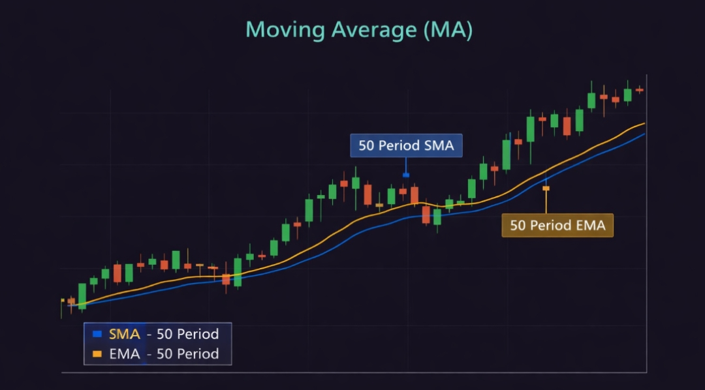
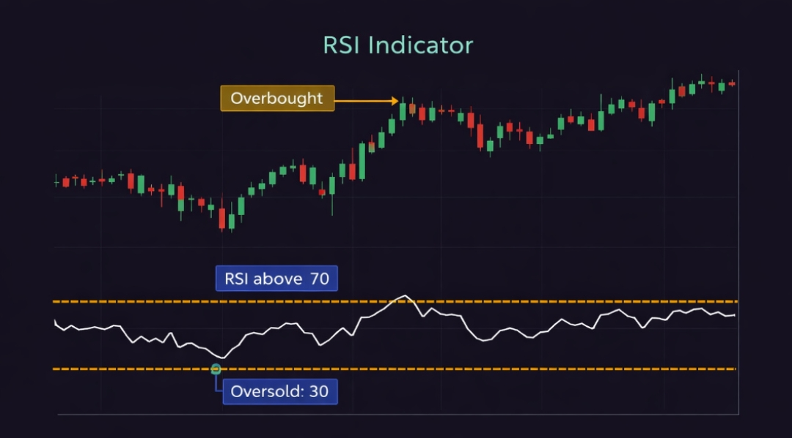
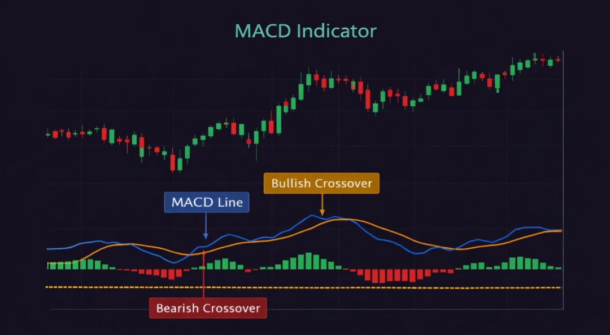

Scalping trading ek fast-paced trading style hai jisme trader small-small profits multiple trades me leta hai.
Simple language me: 👉 “Chhota profit, baar-baar profit”
Yeh beginners ke liye risky ho sakta hai, lekin agar discipline aur strategy sahi ho, to scalping bahut powerful ban sakta hai.
Scalping ka matlab hota hai market me short time ke liye entry lena aur 2–10 points ke small profit par exit karna.
Time frame:
✔ 1 min chart
✔ 3 min chart
✔ 5 min chart
Scalpers ek din me 10–50 trades bhi le sakte hain.
Scalping demand-supply aur short-term momentum par based hoti hai.
Example:
Stock price = ₹100
Tumne buy kiya → ₹101 par exit
Profit = ₹1 (multiple trades me accumulate hota hai)
Yahan consistency sabse important hai.

Trend identify karne ke liye use hota hai.

Overbought / Oversold condition detect karta hai.

Momentum aur trend change batata hai.
Strategy:
👉 Stop loss mandatory hai (1–2 points)
Zyada trades lene se loss badh sakta hai.
Frequent trades = high charges
Fast decisions lene padte hain → stress high hota hai
Fast market me price change ho sakta hai
Scalping me mindset sabse important hai:
Scalping = ultra fast trading
Intraday = medium speed trading
Scalping me profit small but frequent hota hai
Intraday me profit comparatively bada hota hai
Scalping trading beginners ke liye difficult ho sakta hai, lekin agar tum discipline aur practice ke saath kaam karte ho, to yeh ek powerful income strategy ban sakta hai.
👉 Start small
👉 Learn daily
👉 Control emotions
Trading me success ka secret hai consistency.